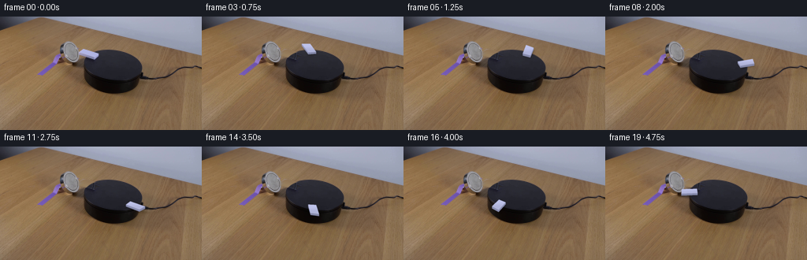
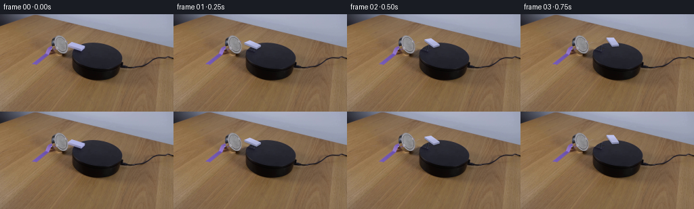
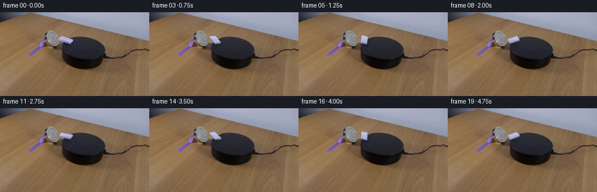
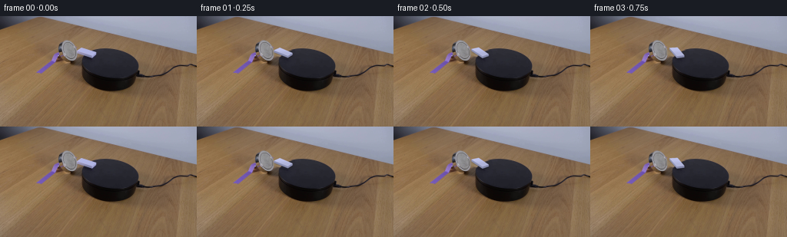
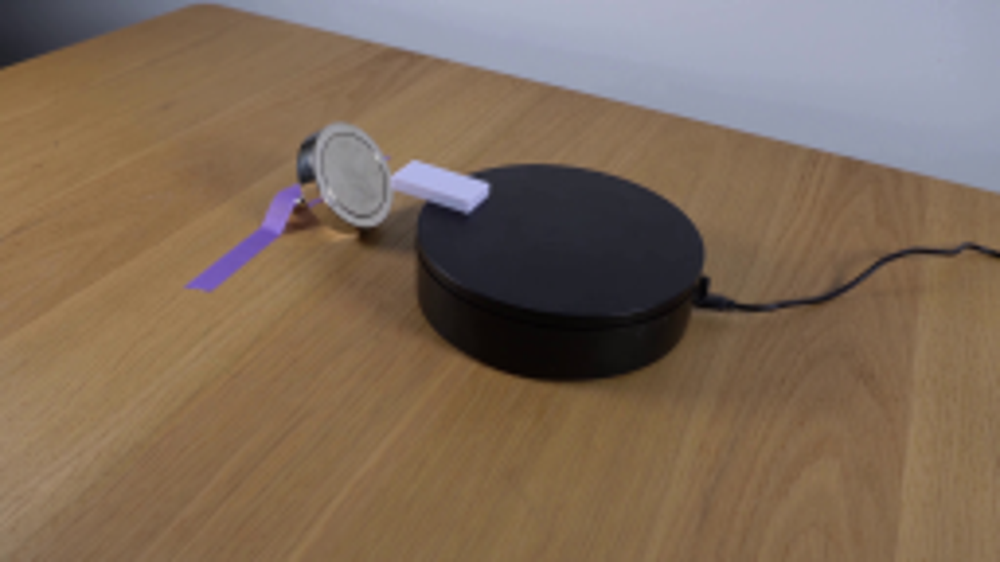
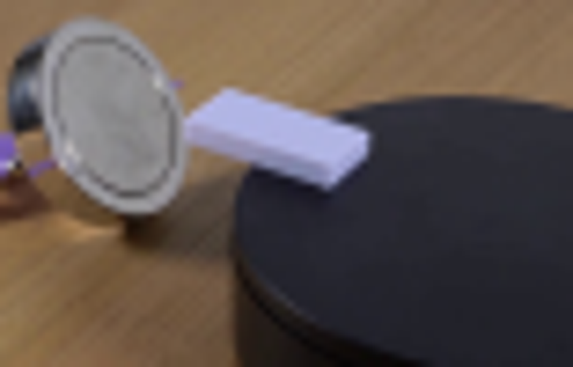
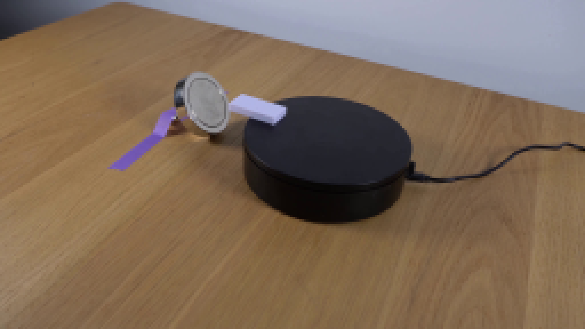
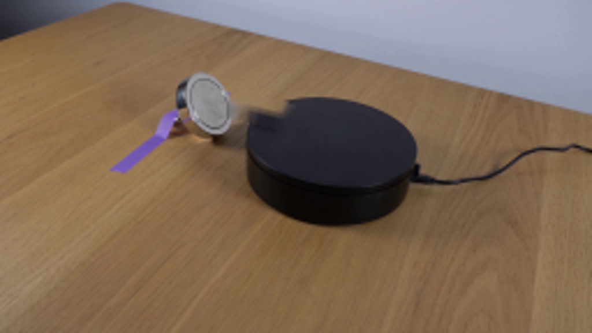
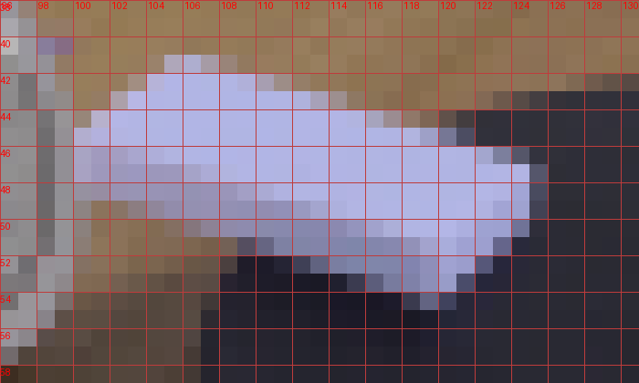
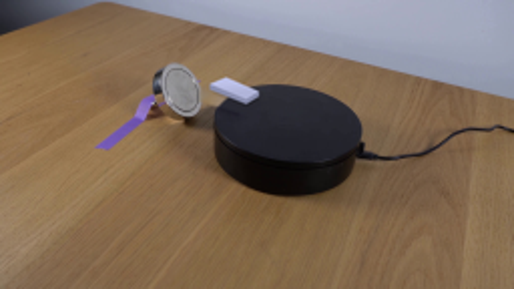

CODING AGENTS AS PIXEL WORLD MODELS
traex/GPT-6.1-Sol · 0096
点击播放 · 原生 RGB 像素
逐轮保存的候选
回放视频、检查图与代码变化。
每份候选均可单独播放。实际图片检查记录在下方工具轨迹中。
候选 01播放与检查图
点击播放 · 原生 RGB 像素


展开代码变化
--- 上一保存版本
+++ 本次保存版本
@@ -0,0 +1,135 @@
+from pathlib import Path
+import numpy as np
+from PIL import Image, ImageDraw, ImageFilter
+import cv2
+from scipy.ndimage import gaussian_filter
+import artifact_io
+
+ROOT = Path(__file__).resolve().parent
+S=4
+H,W=144,256
+
+
+def polygon_mask(points, blur=0):
+ im=Image.new('L',(W*S,H*S),0)
+ ImageDraw.Draw(im).polygon([tuple(p*S) for p in np.asarray(points)],fill=255)
+ if blur: im=im.filter(ImageFilter.GaussianBlur(blur*S))
+ return np.asarray(im,dtype=np.float32)/255
+
+
+def make_background(src):
+ # Restore only the small patch revealed by the moving specimen.
+ outline=np.array([[100,44.6],[106.0,40.8],[110,41.4],[126,46],[126.5,50],[120.7,55.1],[98.6,49.2]])
+ small=polygon_mask(outline,0.5)
+ small=cv2.resize(small,(W,H),interpolation=cv2.INTER_AREA)
+ yy,xx=np.mgrid[:H,:W].astype(float)
+ phi=np.deg2rad(6.61)
+ x=(xx-143.414)*np.cos(phi)+(yy-62.44)*np.sin(phi)
+ y=-(xx-143.414)*np.sin(phi)+(yy-62.44)*np.cos(phi)
+ rho=np.sqrt((x/37.462)**2+(y/20.031)**2)
+ # Normalized signed distance to the observed top of the circular turntable.
+ grad=np.sqrt((x/37.462**2)**2+(y/20.031**2)**2)/np.maximum(rho,.01)
+ distance=(1-rho)/np.maximum(grad,.01)
+ disk=np.clip(distance+.5,0,1)
+ # Wood exposed beneath the old overhang: propagate wood texture only,
+ # keeping the table/platform boundary independent of the inpainting.
+ table_src=src.copy()
+ temporary=np.zeros((H,W),np.uint8)
+ cv2.fillPoly(temporary,[np.array([[98,39],[135,39],[135,62],[98,62]])],255)
+ # A nearby patch has identical table grain direction and lighting.
+ patch=src[25:49,98:136].copy()
+ table_src[39:63,98:136]=patch
+ wood=cv2.inpaint(table_src,(small>.025).astype(np.uint8)*255,4,cv2.INPAINT_TELEA).astype(float)
+ # Fit the softly shaded matte top from intact nearby top-surface pixels.
+ valid=(rho<.88)&(small<.01)&(xx<160)&(yy<72)&(yy>44)
+ X=np.stack([np.ones_like(xx),(xx-140)/40,(yy-60)/20,((xx-140)/40)**2,((yy-60)/20)**2],-1)
+ coef=np.linalg.lstsq(X[valid],src[valid].astype(float),rcond=None)[0]
+ plate=X@coef
+ # Retain tiny photographed surface variations instead of a flat fill.
+ tex=src.astype(float)-gaussian_filter(src.astype(float),(1.2,1.2,0))
+ plate += np.roll(tex,20,axis=1)*.45
+ predicted=wood*(1-disk[...,None])+plate*disk[...,None]
+ # Slightly wider alpha support includes the original soft contact shadow.
+ alpha=small[...,None]
+ cleaned=src*(1-alpha)+predicted*alpha
+ return np.clip(cleaned,0,255).astype(np.uint8)
+
+
+# The perspective map is determined by the photographed circular platform.
+phi=np.deg2rad(6.61)
+A=np.array([[np.cos(phi),-np.sin(phi)*.535],
+ [np.sin(phi), np.cos(phi)*.535]])
+AI=np.linalg.inv(A)
+center=np.array([143.414,62.44])
+height=np.array([0.,2.55])
+original_top=np.array([[100.35,45.75],[106.75,41.55],[124.7,47.0],[120.0,51.45]])
+plane_vertices=(original_top+height-center)@AI.T
+
+
+def specimen(bg,angle):
+ c,s=np.cos(angle),np.sin(angle)
+ R=np.array([[c,-s],[s,c]])
+ world=plane_vertices@R.T
+ bottom=world@A.T+center
+ top=bottom-height
+ canvas=np.asarray(Image.fromarray(bg).resize((W*S,H*S),Image.Resampling.BICUBIC),dtype=float)
+ # Natural contact and penumbra on the surface; no movement of the apparatus.
+ soft=polygon_mask(bottom+np.array([.8,.75]),1.05)*.22
+ contact=polygon_mask(bottom+.15,.38)*.25
+ canvas*=((1-soft)*(1-contact))[...,None]
+ image=Image.fromarray(np.clip(canvas,0,255).astype(np.uint8))
+ draw=ImageDraw.Draw(image)
+ faces=[]
+ light=np.array([-.35,-.94])
+ for j in range(4):
+ k=(j+1)%4
+ edge=top[k]-top[j]
+ if edge[0]>=0: continue
+ ew=world[k]-world[j]
+ normal=np.array([ew[1],-ew[0]])
+ normal/=np.linalg.norm(normal)
+ strength=float(normal@light)
+ col=np.array([147,151,185])+strength*np.array([15,15,16])
+ faces.append((np.mean([bottom[j,1],bottom[k,1]]),np.array([top[j],top[k],bottom[k],bottom[j]]),tuple(np.clip(col,0,255).astype(int))))
+ for _,p,color in sorted(faces,key=lambda f:f[0]):
+ draw.polygon([tuple(v*S) for v in p],fill=color)
+ # The blank ivory/lavender plastic top has no invented markings.
+ draw.polygon([tuple(v*S) for v in top],fill=(182,186,224))
+ top_mask=polygon_mask(top)
+ pix=np.asarray(image,dtype=np.float32)
+ yy,xx=np.mgrid[:H*S,:W*S]
+ ramp=1.0 + .017*(np.mean(top[:,1])-yy/S) -.00065*(xx/S-np.mean(top[:,0]))
+ ramp=np.clip(ramp,.97,1.045)
+ pix=pix*(1-top_mask[...,None])+pix*ramp[...,None]*top_mask[...,None]
+ image=Image.fromarray(np.clip(pix,0,255).astype(np.uint8))
+ # Fine moulded edge, softened to match the image's optical point spread.
+ draw=ImageDraw.Draw(image)
+ for j in range(4):
+ k=(j+1)%4
+ if top[k,0]-top[j,0]>0:
+ draw.line([tuple(top[j]*S),tuple(top[k]*S)],fill=(191,195,231),width=1)
+ image=image.filter(ImageFilter.GaussianBlur(.24*S))
+ result=np.asarray(image.resize((W,H),Image.Resampling.LANCZOS))
+ # Keep all stationary photographed objects and pixels strictly unchanged.
+ coverage=polygon_mask(top,.9)+polygon_mask(bottom+np.array([.8,.75]),2.7)
+ cov=cv2.resize(np.clip(coverage,0,1),(W,H),interpolation=cv2.INTER_AREA)
+ region=(cov>.001)
+ out=bg.copy();out[region]=result[region]
+ return out
+
+
+def main():
+ src=np.asarray(Image.open(ROOT/'first_frame.png').convert('RGB'))
+ bg=make_background(src)
+ Image.fromarray(bg).save(ROOT/'.tmp/background.png')
+ frames=[src.copy()]
+ # Clockwise planar motion at a modest, real-time turntable rate, with
+ # a short smooth start; the camera, magnet and cable remain locked off.
+ for index in range(1,20):
+ t=index/4
+ angle=1.23*(t-.11*(1-np.exp(-t/.11)))
+ frames.append(specimen(bg,angle))
+ frames=np.stack(frames).astype(np.uint8)
+ artifact_io.save(frames,ROOT)
+
+if __name__=='__main__': main()
候选 02播放与检查图
点击播放 · 原生 RGB 像素
展开代码变化
--- 上一保存版本
+++ 本次保存版本
@@ -19,8 +19,8 @@
def make_background(src):
# Restore only the small patch revealed by the moving specimen.
- outline=np.array([[100,44.6],[106.0,40.8],[110,41.4],[126,46],[126.5,50],[120.7,55.1],[98.6,49.2]])
- small=polygon_mask(outline,0.5)
+ outline=np.array([[99.8,44.0],[106.0,39.4],[111,40.1],[128,45.5],[128,51.5],[121.3,57],[99.3,50.4]])
+ small=polygon_mask(outline,0.36)
small=cv2.resize(small,(W,H),interpolation=cv2.INTER_AREA)
yy,xx=np.mgrid[:H,:W].astype(float)
phi=np.deg2rad(6.61)
@@ -47,7 +47,7 @@
plate=X@coef
# Retain tiny photographed surface variations instead of a flat fill.
tex=src.astype(float)-gaussian_filter(src.astype(float),(1.2,1.2,0))
- plate += np.roll(tex,20,axis=1)*.45
+ plate += np.roll(tex,-28,axis=1)*.3
predicted=wood*(1-disk[...,None])+plate*disk[...,None]
# Slightly wider alpha support includes the original soft contact shadow.
alpha=small[...,None]
候选 03播放与检查图
点击播放 · 原生 RGB 像素


展开代码变化
--- 上一保存版本
+++ 本次保存版本
@@ -69,7 +69,8 @@
def specimen(bg,angle):
c,s=np.cos(angle),np.sin(angle)
R=np.array([[c,-s],[s,c]])
- world=plane_vertices@R.T
+ pivot=plane_vertices.mean(axis=0)
+ world=(plane_vertices-pivot)@R.T+pivot
bottom=world@A.T+center
top=bottom-height
canvas=np.asarray(Image.fromarray(bg).resize((W*S,H*S),Image.Resampling.BICUBIC),dtype=float)
@@ -127,7 +128,7 @@
# a short smooth start; the camera, magnet and cable remain locked off.
for index in range(1,20):
t=index/4
- angle=1.23*(t-.11*(1-np.exp(-t/.11)))
+ angle=1.12*(t-.11*(1-np.exp(-t/.11)))
frames.append(specimen(bg,angle))
frames=np.stack(frames).astype(np.uint8)
artifact_io.save(frames,ROOT)
可观测工具轨迹
实际执行的命令与返回图片。
命令 1exit 0
/bin/bash -lc "cat prompt.txt && printf '\\n--- RULES ---\\n' && cat GENERATION_RULES.md && printf '\\n--- FILES ---\\n' && ls -la"
命令 2exit 0
/bin/bash -lc "cat artifact_io.py && python - <<'PY'
from PIL import Image
im=Image.open('first_frame.png');print(im.size)
im.resize((1024,576)).save('.tmp/upscaled.png')
PY"命令 3exit 0
/bin/bash -lc "python - <<'PY'
from PIL import Image
im=Image.open('first_frame.png')
im.crop((75,29,153,79)).resize((936,600)).save('.tmp/crop.png')
PY"命令 4exit 0
/bin/bash -lc "python - <<'PY'
import importlib.util
for m in ['numpy','PIL','cv2','scipy']: print(m, bool(importlib.util.find_spec(m)))
from PIL import Image
Image.open('first_frame.png').resize((1536,864),Image.Resampling.NEAREST).save('.tmp/nearest.png')
PY"命令 5exit 0
/bin/bash -lc "python - <<'PY'
import cv2,numpy as np
from PIL import Image
im=cv2.imread('first_frame.png')
mask=np.zeros(im.shape[:2],np.uint8)
p=np.array([[106,40],[127,45],[127,51],[122,56],[99,50],[99,43]])
cv2.fillPoly(mask,[p],255)
x=cv2.inpaint(im,mask,4,cv2.INPAINT_TELEA)
Image.fromarray(cv2.cvtColor(x,cv2.COLOR_BGR2RGB)).save('.tmp/clean_test.png')
Image.fromarray(cv2.cvtColor(x,cv2.COLOR_BGR2RGB)).resize((1024,576)).save('.tmp/clean_up.png')
PY"命令 6exit 0
/bin/bash -lc "python - <<'PY' import numpy as np A=np.array([[.848,-.53],[.254,.406]]) print(np.linalg.inv(A)@np.array([-30.1,-12.5])) PY"
命令 7exit 0
/bin/bash -lc "python - <<'PY'
from PIL import Image, ImageDraw
im=Image.open('first_frame.png').crop((96,38,131,59)).resize((700,420),Image.Resampling.NEAREST)
d=ImageDraw.Draw(im)
for x in range(0,35):
if x%2==0:
d.line([(x*20,0),(x*20,420)],fill=(190,60,60),width=1);d.text((x*20+2,0),str(x+96),fill=(255,0,0))
for y in range(0,21):
if y%2==0:
d.line([(0,y*20),(700,y*20)],fill=(190,60,60),width=1);d.text((0,y*20+2),str(y+38),fill=(255,0,0))
im.save('.tmp/grid.png')
PY"命令 8exit 0
/bin/bash -lc "python - <<'PY' import cv2,numpy as np pts=np.array([(127,43.7),(136,42.1),(148,42.3),(160,46),(173,53),(179,59),(180.7,67),(176,75),(166,80),(151,83),(137,81.7),(120,76),(110,69),(106.8,60),(108.7,51)],np.float32) print(cv2.fitEllipse(pts)) PY"
命令 9exit 0
/bin/bash -lc "cat > generate.py <<'PY'
from pathlib import Path
import numpy as np
from PIL import Image, ImageDraw, ImageFilter
import cv2
from scipy.ndimage import gaussian_filter
import artifact_io
ROOT = Path(__file__).resolve().parent
S=4
H,W=144,256
def polygon_mask(points, blur=0):
im=Image.new('L',(W*S,H*S),0)
ImageDraw.Draw(im).polygon([tuple(p*S) for p in np.asarray(points)],fill=255)
if blur: im=im.filter(ImageFilter.GaussianBlur(blur*S))
return np.asarray(im,dtype=np.float32)/255
def make_background(src):
# Restore only the small patch revealed by the moving specimen.
outline=np.array([[100,44.6],[106.0,40.8],[110,41.4],[126,46],[126.5,50],[120.7,55.1],[98.6,49.2]])
small=polygon_mask(outline,0.5)
small=cv2.resize(small,(W,H),interpolation=cv2.INTER_AREA)
yy,xx=np.mgrid[:H,:W].astype(float)
phi=np.deg2rad(6.61)
x=(xx-143.414)*np.cos(phi)+(yy-62.44)*np.sin(phi)
y=-(xx-143.414)*np.sin(phi)+(yy-62.44)*np.cos(phi)
rho=np.sqrt((x/37.462)**2+(y/20.031)**2)
# Normalized signed distance to the observed top of the circular turntable.
grad=np.sqrt((x/37.462**2)**2+(y/20.031**2)**2)/np.maximum(rho,.01)
distance=(1-rho)/np.maximum(grad,.01)
disk=np.clip(distance+.5,0,1)
# Wood exposed beneath the old overhang: propagate wood texture only,
# keeping the table/platform boundary independent of the inpainting.
table_src=src.copy()
temporary=np.zeros((H,W),np.uint8)
cv2.fillPoly(temporary,[np.array([[98,39],[135,39],[135,62],[98,62]])],255)
# A nearby patch has identical table grain direction and lighting.
patch=src[25:49,98:136].copy()
table_src[39:63,98:136]=patch
wood=cv2.inpaint(table_src,(small>.025).astype(np.uint8)*255,4,cv2.INPAINT_TELEA).astype(float)
# Fit the softly shaded matte top from intact nearby top-surface pixels.
valid=(rho<.88)&(small<.01)&(xx<160)&(yy<72)&(yy>44)
X=np.stack([np.ones_like(xx),(xx-140)/40,(yy-60)/20,((xx-140)/40)**2,((yy-60)/20)**2],-1)
coef=np.linalg.lstsq(X[valid],src[valid].astype(float),rcond=None)[0]
plate=X@coef
# Retain tiny photographed surface variations instead of a flat fill.
tex=src.astype(float)-gaussian_filter(src.astype(float),(1.2,1.2,0))
plate += np.roll(tex,20,axis=1)*.45
predicted=wood*(1-disk[...,None])+plate*disk[...,None]
# Slightly wider alpha support includes the original soft contact shadow.
alpha=small[...,None]
cleaned=src*(1-alpha)+predicted*alpha
return np.clip(cleaned,0,255).astype(np.uint8)
# The perspective map is determined by the photographed circular platform.
phi=np.deg2rad(6.61)
A=np.array([[np.cos(phi),-np.sin(phi)*.535],
[np.sin(phi), np.cos(phi)*.535]])
AI=np.linalg.inv(A)
center=np.array([143.414,62.44])
height=np.array([0.,2.55])
original_top=np.array([[100.35,45.75],[106.75,41.55],[124.7,47.0],[120.0,51.45]])
plane_vertices=(original_top+height-center)@AI.T
def specimen(bg,angle):
c,s=np.cos(angle),np.sin(angle)
R=np.array([[c,-s],[s,c]])
world=plane_vertices@R.T
bottom=world@A.T+center
top=bottom-height
canvas=np.asarray(Image.fromarray(bg).resize((W*S,H*S),Image.Resampling.BICUBIC),dtype=float)
# Natural contact and penumbra on the surface; no movement of the apparatus.
soft=polygon_mask(bottom+np.array([.8,.75]),1.05)*.22
contact=polygon_mask(bottom+.15,.38)*.25
canvas*=((1-soft)*(1-contact))[...,None]
image=Image.fromarray(np.clip(canvas,0,255).astype(np.uint8))
draw=ImageDraw.Draw(image)
faces=[]
light=np.array([-.35,-.94])
for j in range(4):
k=(j+1)%4
edge=top[k]-top[j]
if edge[0]>=0: continue
ew=world[k]-world[j]
normal=np.array([ew[1],-ew[0]])
normal/=np.linalg.norm(normal)
strength=float(normal@light)
col=np.array([147,151,185])+strength*np.array([15,15,16])
faces.append((np.mean([bottom[j,1],bottom[k,1]]),np.array([top[j],top[k],bottom[k],bottom[j]]),tuple(np.clip(col,0,255).astype(int))))
for _,p,color in sorted(faces,key=lambda f:f[0]):
draw.polygon([tuple(v*S) for v in p],fill=color)
# The blank ivory/lavender plastic top has no invented markings.
draw.polygon([tuple(v*S) for v in top],fill=(182,186,224))
top_mask=polygon_mask(top)
pix=np.asarray(image,dtype=np.float32)
yy,xx=np.mgrid[:H*S,:W*S]
ramp=1.0 + .017*(np.mean(top[:,1])-yy/S) -.00065*(xx/S-np.mean(top[:,0]))
ramp=np.clip(ramp,.97,1.045)
pix=pix*(1-top_mask[...,None])+pix*ramp[...,None]*top_mask[...,None]
image=Image.fromarray(np.clip(pix,0,255).astype(np.uint8))
# Fine moulded edge, softened to match the image's optical point spread.
draw=ImageDraw.Draw(image)
for j in range(4):
k=(j+1)%4
if top[k,0]-top[j,0]>0:
draw.line([tuple(top[j]*S),tuple(top[k]*S)],fill=(191,195,231),width=1)
image=image.filter(ImageFilter.GaussianBlur(.24*S))
result=np.asarray(image.resize((W,H),Image.Resampling.LANCZOS))
# Keep all stationary photographed objects and pixels strictly unchanged.
coverage=polygon_mask(top,.9)+polygon_mask(bottom+np.array([.8,.75]),2.7)
cov=cv2.resize(np.clip(coverage,0,1),(W,H),interpolation=cv2.INTER_AREA)
region=(cov>.001)
out=bg.copy();out[region]=result[region]
return out
def main():
src=np.asarray(Image.open(ROOT/'first_frame.png').convert('RGB'))
bg=make_background(src)
Image.fromarray(bg).save(ROOT/'.tmp/background.png')
frames=[src.copy()]
# Clockwise planar motion at a modest, real-time turntable rate, with
# a short smooth start; the camera, magnet and cable remain locked off.
for index in range(1,20):
t=index/4
angle=1.23*(t-.11*(1-np.exp(-t/.11)))
frames.append(specimen(bg,angle))
frames=np.stack(frames).astype(np.uint8)
artifact_io.save(frames,ROOT)
if __name__=='__main__': main()
PY
python generate.py"命令 10exit 0
/bin/bash -lc "python - <<'PY'
from PIL import Image
im=Image.open('.tmp/background.png');im.resize((1024,576)).save('.tmp/bg_up.png')
PY"命令 11exit 0
/bin/bash -lc "python generate.py && python - <<'PY'
from PIL import Image
Image.open('.tmp/background.png').resize((1024,576)).save('.tmp/bg_up2.png')
Image.open('frames/01.png').resize((1024,576)).save('.tmp/frame1_up.png')
PY"命令 12exit 0
/bin/bash -lc "python - <<'PY'
import generate,numpy as np
print(generate.plane_vertices)
print(np.linalg.norm(generate.plane_vertices,axis=1))
from PIL import Image
src=np.asarray(Image.open('first_frame.png').convert('RGB'))
f=np.asarray(Image.open('frames/00.png'))
print('Frame 00 identical:',np.array_equal(src,f))
f=np.stack([np.asarray(Image.open(f'frames/{i:02}.png')) for i in range(20)])
print(f.shape,f.dtype)
PY"命令 13exit 0
/bin/bash -lc "cp generate.py .tmp/generate_orbit.py
python - <<'PY'
p='generate.py'
s=open(p).read().replace('world=plane_vertices@R.T','pivot=plane_vertices.mean(axis=0)\\n world=(plane_vertices-pivot)@R.T+pivot')
s=s.replace('angle=1.23*(t-.11*(1-np.exp(-t/.11)))','angle=1.12*(t-.11*(1-np.exp(-t/.11)))')
open(p,'w').write(s)
PY
python generate.py"命令 14exit 0
/bin/bash -lc "command -v ffmpeg || true; python - <<'PY'
import numpy as np
from PIL import Image
f=np.stack([np.asarray(Image.open(f'frames/{i:02d}.png').convert('RGB')) for i in range(20)])
assert f.shape==(20,144,256,3) and f.dtype==np.uint8
assert np.array_equal(f[0],np.asarray(Image.open('first_frame.png').convert('RGB')))
p=np.load('pixels.npz')['pixels']
assert p.shape==(144,256,20)
print('Validated 20 RGB frames; first frame is pixel-identical.')
PY"视觉工具实际返回图片 1

视觉工具实际返回图片 2

视觉工具实际返回图片 3

视觉工具实际返回图片 4

视觉工具实际返回图片 5

视觉工具实际返回图片 6

视觉工具实际返回图片 7
视觉工具实际返回图片 8
视觉工具实际返回图片 9
视觉工具实际返回图片 10

视觉工具实际返回图片 11

保存候选 3 份；完成命令 14 次；可验证图片返回 11 张。原始 API 响应与完整日志保留在本地。